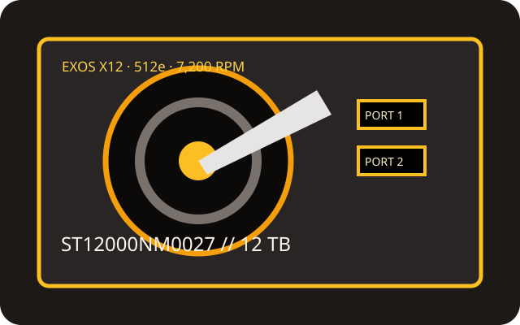

[ IDENTIFIED HDD // MODEL-SPECIFIC RECORD ]
Seagate Exos X12 ST12000NM0027
12 TB nearline enterprise SAS drive identified by exact 512e part number ST12000NM0027. Do not assume the interface from the Exos X12 family name alone.

Recorded specifications
| Exact model | Seagate Exos X12 ST12000NM0027 |
|---|---|
| Capacity | 12 TB |
| Sector format | 512e (512-byte emulation; 4 KiB physical sectors) |
| Interface / ports | SAS-3, 12 Gbit/s, dual-port |
| Rotational speed | 7,200 rpm |
| Cache | 256 MB |
| Form factor | 3.5-inch, helium-sealed |
| Workload / reliability | 550 TB/year workload rating and 2.5 million-hour MTBF, per Exos X12 series documentation. These are rated population figures and not a guarantee of operating life. |
Host compatibility and qualification
- Requires a SAS-capable HBA or RAID controller plus SAS backplane/expander; SATA-only controllers cannot run SAS devices. Confirm support for 12 TB capacity, 512e, the exact firmware and the 3.5-inch tray/power requirements.
- Port redundancy depends on the controller and dual-path SAS fabric. Do not assume a SATA backplane will expose both SAS ports; follow the server OEM compatibility list.
- Apply the rated workload as a limit, not a reliability forecast. Maintain independent verified backups and monitor drive health through supported controller tools.
Manufacturer sources
- Seagate — Exos X12 SAS product manualManufacturer 512e SAS manual for this capacity/model family.
- Seagate — official support and drive documentationManufacturer support resource; match drive label, firmware and exact SKU when checking current records.